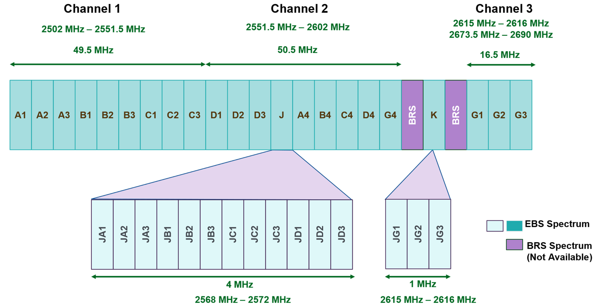

Step 3. Assess key resources

To deploy and operate the network equipment and systems that comprise the Network, critical resources are required: spectrum, telecom infrastructure, and funding. Therefore, an assessment of the available resources must be done to determine its suitability/sufficiency and develop a plan to acquire missing resources.
3.1 Assess spectrum
Radiofrequency (RF) spectrum refers to the range of frequencies used by a wireless communication system, while bandwidth is the RF spectrum amount occupied by an RF signal.
The spectrum bandwidth determines the capacity of a wireless system. Wider — larger — bandwidth channels can carry more information.
Federal Communications Commission (FCC) manages non-Federal spectrum use, imposing constraints and rules so that different systems do not interfere with each other.
Additional details on spectrum and broadband fundamentals are addressed in this FCC video.
Suitable spectrum for fixed wireless access that can be utilized by Tribal Lands are the educational broadband service (EBS) spectrum in the 2.5 GHz band, the citizen radio broadband service (CBRS) spectrum in the 3.5 GHz band and the unlicensed spectrum in the 5 GHz bands. Acquisition and operation of spectrum on each of these bands are subject to different regulations and constraints:
● EBS spectrum
EBS spectrum consists of 117.5 MHz in the 2.5 GHz band, distributed in one channel of 49.5 MHz — New Channel 1 —, one channel of 50.5 MHz — New Channel 2 —, and one channel of 17.5 MHz — New Channel 3 —. This band plan is displayed in Figure 3.1.

Figure 3.1 — 2.5 GHz Band Plan.
Please notice that there is also a legacy band plan which is divided into five-channel groups which are labeled in the frequency blocks of Figure 3.1: A, B, C, D, G. This means that there are license holders who obtained a license based on the channel groups of the legacy band plan, creating the possibility that some channels may be only partially available in your Tribal Land. However, in most cases, you'll be able to find blocks of contiguous available spectrum of 10, 15, or 20 MHz, which are suitable to provide broadband service.
The FCC conducted a Rural Tribal Priority Window, an opportunity for Tribes in rural areas to directly access unassigned EBS spectrum over their Tribal lands. This window was closed on September 2, 2020.
If your Tribal Land is granted an EBS license, you must put the licensed spectrum to use. To keep the license, two years after the license is granted you will be required to submit evidence that your service covers 50% of the population in the license area. This means that 50% of the population must be able to access the service if they choose. Five years after the license is granted, the requirement will be to cover 80% of the population in the license area.
For more information, go to the FCC webpage.
● CBRS spectrum
CBRS spectrum consists of 150 MHz, from 3550 MHz to 3700 MHz. There are three ways to access spectrum in the FCC defined by the FCC: incumbent operations, priority access licenses (PALs), and general authorized access (GAA).

Figure 3.2 — CBRS band and access mechanisms.
Tribal Lands can access between 80 and 150 MHz — depending on existing incumbents and PALs — via GAA. This method doesn't require a license; instead, access is controlled by FCC-certified spectrum access systems (SASes). A SAS is a centralized system with sensing capability to detect incumbent transmissions and avoid interference through communication with PAL or GAA systems.
This means that you'll need to pay a SAS to connect your Network to their system; usually, the SAS will charge a monthly rate for each equipment using CBRS spectrum — base stations and equipment installed at each home —. A list of the FCC-certified SASes is provided here. If you're planning to use the CBRS spectrum, remember to compare available SASes and obtain from them more information about the availability of CBRS spectrum in your target areas.
In addition, the FCC requires all base stations with a transmit power higher than one Watt and base stations with lower transmit power installed above 6 meters from the average terrain elevation to be installed — or at least validated — by a certified professional installer (CPI). This service can come from the SAS or value-added resellers of equipment and system integrators.
● Unlicensed spectrum
Unlicensed spectrum available for broadband wireless access in 5 GHz consists of 580 MHz distributed in four bands of the unlicensed national information infrastructure (U-NII), for which licenses and fees are not required. The corresponding band plan is shown in Figure 3.3.

Figure 3.3 — 5GHz unlicensed spectrum.
To avoid interference and to ensure a fair use of this spectrum, the FCC imposes certain requirements and regulations to use it, the most important being the maximum transmit power and maximum effective isotropic radiated power (EIRP). Specific values are shown in Table 3.1.
|
Frequency Range |
Max TX Power |
Max EIRP |
|
5150—5250 MHz |
50 mW (17 dBm) |
200 mW (23 dBm) |
|
5250—5350 MHz |
250 mW (24 dBm) |
1 W (30 dBm) |
|
5470—5725 MHz |
250 mW (24 dBm) |
1 W (30 dBm) |
|
5725—5850 MHz |
1 W (30 dBm) |
4 W (36 dBm) |
Table 3.1 — Unlicensed spectrum transmit power and emission limits.
In addition, a feature called dynamic frequency selection (DFS) must be implemented by any wireless communication systems — including broadband access — operating in the frequency ranges 5250—5350 MHz and 5470—5725 MHz — optional for 5150—5250 MHz —.
Considering the above, the frequency range 57250—5850 MHz is the most used for broadband access.
Define spectrum strategy
Your spectrum strategy should be defined based on your target polygons. A simple guide is provided below:
Keep in mind that this is the high-level strategy. The specific bands and frequencies to be used in each site of the Network will be defined during the design process.
3.2 Assess telecom infrastructure
Telecom infrastructure relevant to the Network consists of sites or antenna mounting structures, equipment rooms, existing backhaul networks owned by your Tribal Land, and high-speed internet connectivity.
Being aware of the existing and required telecom infrastructure assets is an absolute requirement for an efficient network design enabling a smooth network deployment: information collected from the sites will enable you or your contracted consultants to develop accurate preliminary designs without further site visits; reutilizing existing backhaul networks can save you thousands of dollars; and early identification of missing resources will allow to acquire them in a timely and ordered fashion.
First, you need to perform a general area survey to develop a list of sites that may be feasible for network deployment. Some guidelines to define the sites are the following:
Then, to collect data from sites, mounting structures, equipment rooms, and backhaul networks, utilize the site data collection kit. It's a comprehensive set of instructions to collect data using the Google MyMaps application. This will allow you and your team to not only collect but also share and store the data in the cloud.
Finally, you can export the data from MyMaps and share it with consultants, vendors, and other members of your team.
If you decide to contract consulting services, this step can be skipped and included as part of the consultant scope. More details are provided in step 6.
3.3 Get funding
If you already have a budget assigned for this project, you can skip this section. Otherwise, you must define a strategy to get funding for your initiative. As a rough estimate, you can consider that the capital investment per subscriber is typically in the range of $500 to $1,000.
If your tribal administration does not have a budget for broadband connectivity, you can always apply for a grant. Good places to look for a grant are the following:
Getting funding is a process that may run in parallel with the next series of steps in the Journey. What's important for this step 3 is to establish the actions that you will pursue to get that founding. Once this is done, you can either continue to the next step or issue a request for information (RFI) or request for proposals (RFP) to analyze vendor solutions and/or proposals to deploy your Network in step 6.
⇐ Step Two